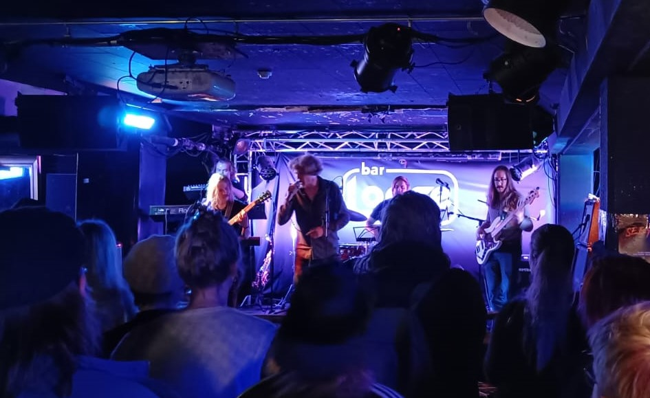

Aqua-Wreck
Aqua-Wreck on Helsingistä käsin toimiva helsinkiläis-kotkalais-porilais-tamperelais-turkulainen progressiivista rockia soittava viisihenkinen yhtye. Se johdattaa kuulijansa musiikillisen merensä pohjukkoihin, tutkimaan pinnan alta löytyviä maailmoja. Inspiraationsa se ottaa, milloin ihmismielen oikullisuudesta, toisinaan pöydän läimimisestä. Musiikissaan soi laajasti vaikutteita hard rockista, R&B:ista, jazzista ja klassisesta musiikista.
Yhteydenotot xx@xx.xx